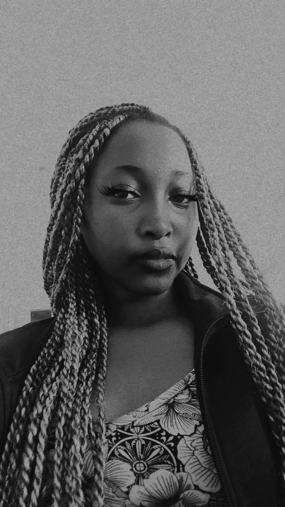

Computer Science E-Portfolio · Level 6
Kyla Maria Jepchumba
TDC113-C002-0001/2024
I'm a motivated Computer Science student with a passion for creating smart, efficient, and user-focused solutions. Through my course, I've built strong skills in programming, algorithms, and database management, while also tackling personal projects to improve my skills and have fueled my creativity and adaptability. I'm inspired by the fast pace of technology innovation and enjoy exploring ways to solve real-world problems through code. My goal is to merge technical expertise with fresh ideas to develop software that makes a meaningful impact.